Redesigning GrubHub Mobile
A one-week solo UI/UX sprint reimagining WashU's campus GrubHub app, from a cluttered, orange-and-gray interface into a calmer, more legible ordering experience.
Overview
This project came from Product Space, a product design organization at WashU, as a one-week solo sprint with a single, wide-open prompt: redesign the UI of our campus GrubHub app. No feature brief, no stakeholder requirements, just an interface that every student on campus already used daily and had opinions about. With one week and no team to split the work with, I owned research, wireframes, and final UI myself, start to finish.
The Original App
The Pain Points
Six recurring pain points pulled from using the app myself and hearing other students complain about it.
Research
Since there was no team and no time for a full research phase, I leaned on two fast, parallel tracks: a short survey of WashU students about their actual GrubHub habits and frustrations, and a competitive audit of apps that already solve pieces of this problem well.
The informal survey confirmed what the pain points already suggested: students wanted faster reordering of go-to items, clearer real-time order status, and a menu that didn't feel like scrolling through a spreadsheet. That gave me a rough hierarchy of what to fix first versus what to polish if time allowed.
Design System Opportunities From Other Apps
I audited three apps students already use for food ordering, looking specifically for patterns worth borrowing rather than a full competitive teardown.

- Rating, price range, and cuisine tags surfaced right at the top of a restaurant page
- Photo-forward layout that makes a menu feel appetizing, not just functional

- Horizontal category tabs let users filter by cuisine without leaving the home screen
- A single hero promo banner instead of competing banners fighting for attention

- Past orders and current orders live in one unified list, sorted by recency
- A one-tap "reorder" action on every past order, no rebuilding a cart from scratch

- Account hub organized into clear destinations: favorites, wallet, and orders
- Consistent row style and iconography across every settings-style list

- Large hero image and price anchored at the top of the item-detail screen
- Customization options exposed inline instead of hidden behind a second tap

- Customization submenu grouped by option type, each with clear selected-state styling
- Sticky bottom action button so "add to order" never scrolls out of reach
User Persona
Jordan Kim
Sophomore, WashU
Jordan orders GrubHub between classes almost every day, usually while walking across campus. She wants to order fast, reorder her usual without thinking, and know exactly when her food will be ready without checking three different screens.
- Order in under a minute between classes
- Reorder go-to items with minimal taps
- See real-time order status at a glance
- Cluttered menus slow down quick decisions
- Hard to tell when an order is actually ready
- Customizing an item feels like filling out a form
The App
The final design keeps GrubHub's core ordering flow intact but rebuilds it around a calmer purple-and-white system, clearer hierarchy, and a menu that's actually easy to scan. Below is the full prototype walkthrough, followed by the main screens.
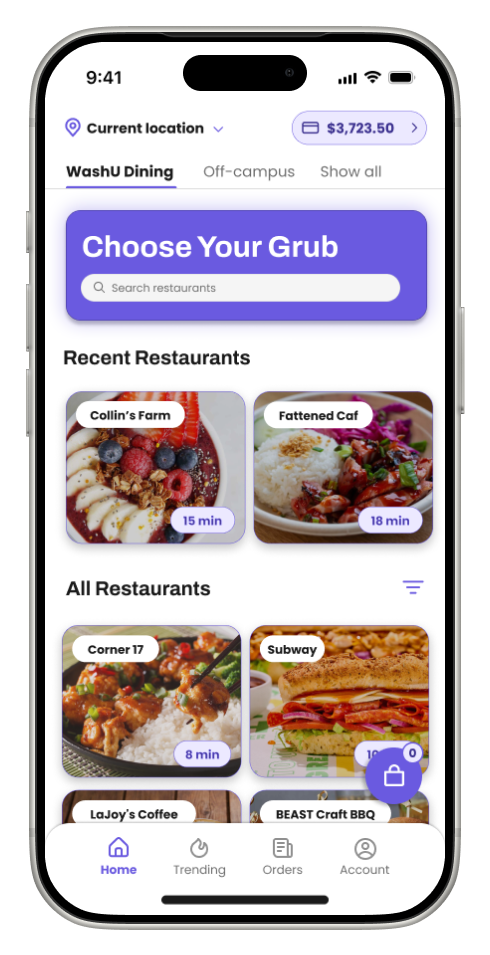
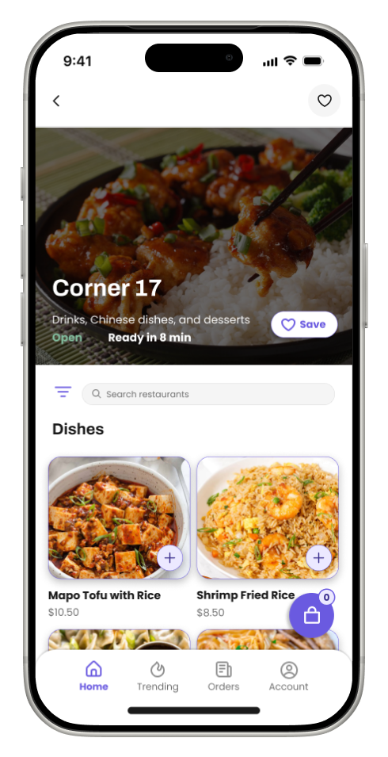
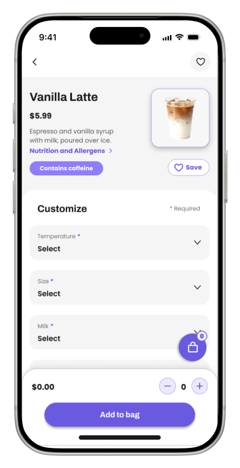
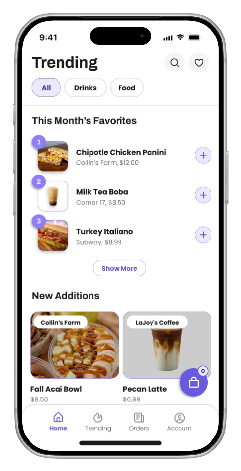
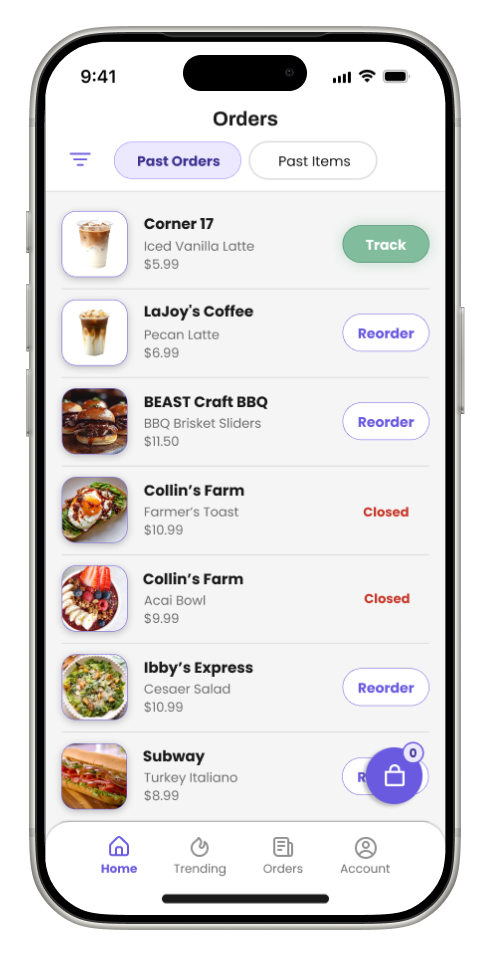
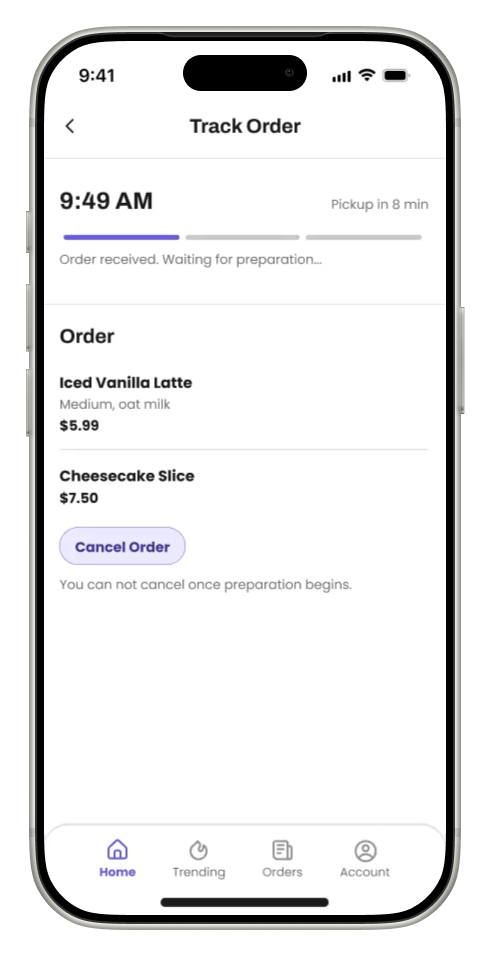
The Process
Low-Fidelity Wireframes
With only a week, I started fast and rough: paper-thin wireframes to lock down the core navigation (home, menu, cart, orders, account) and confirm the campus-dining mental model before touching any color or type.
Mid-Fidelity Wireframes
From there I moved into mid-fidelity screens: real layout proportions and spacing, still in grayscale, so I could pressure-test the information hierarchy (what's a header, what's a card, what's an action) before any branding decisions locked it in place.
Why Purple Instead of Orange
GrubHub's own brand orange is great for a national delivery app competing for attention in a crowded app store, but it fought with itself on a smaller, single-purpose campus ordering app: at high density (long menus, dense order lists) it read as loud and a little fatiguing rather than energetic. I moved the primary palette to a softer purple instead, which held up better across long scrolling menus, still felt warm and appetizing, and gave "add to bag" and other key actions more contrast to stand out against, since nothing else on the redesigned screens competes with it in the same hue.
High-Fidelity Screens
The full flow, from browsing to checkout to order tracking, in final fidelity.
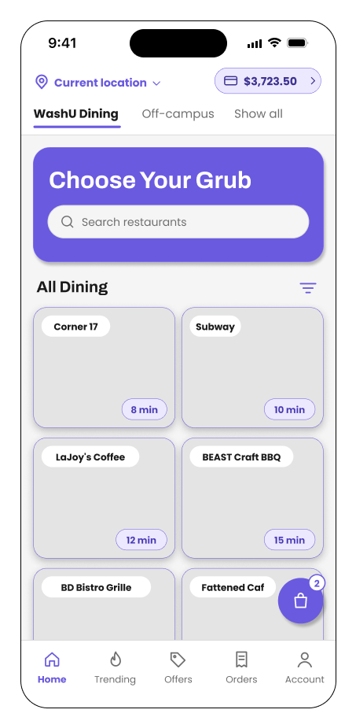
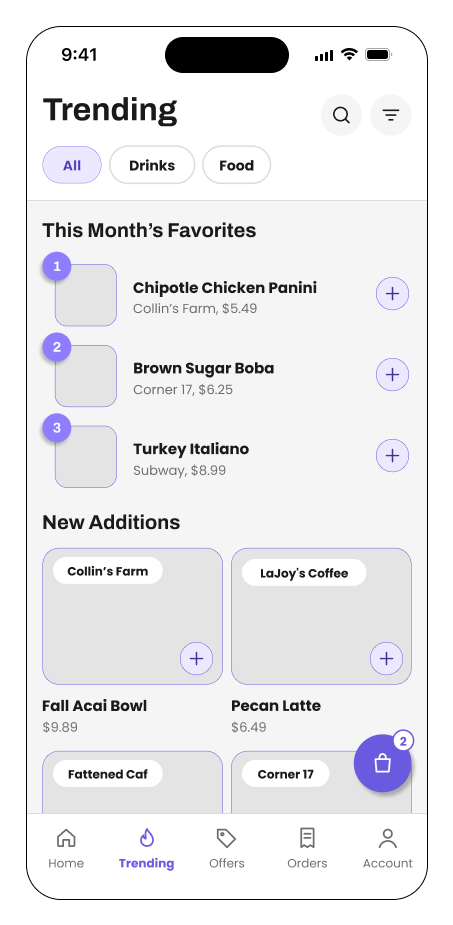
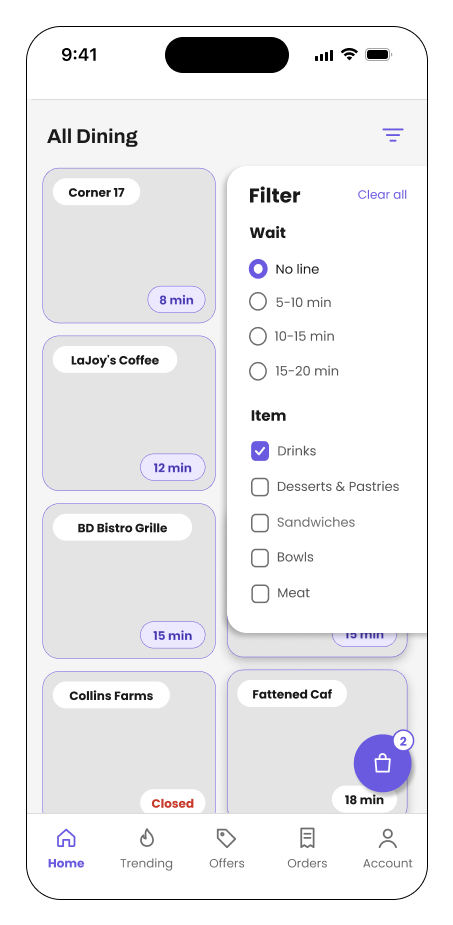
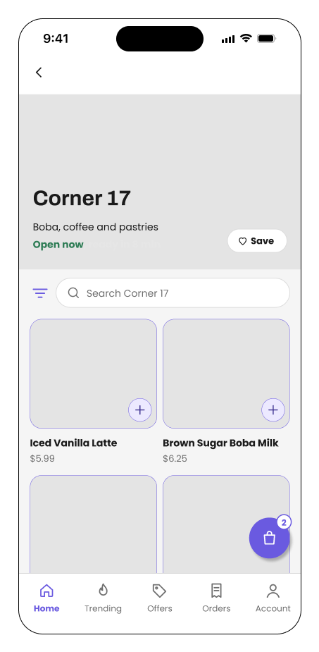
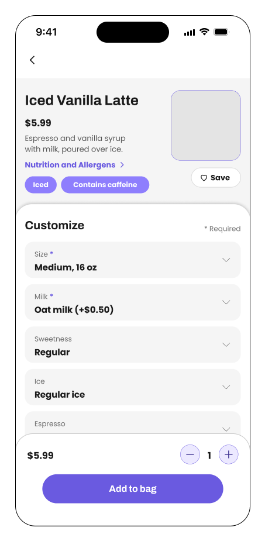
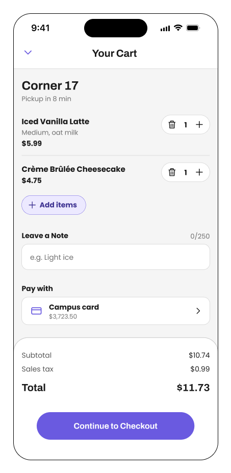
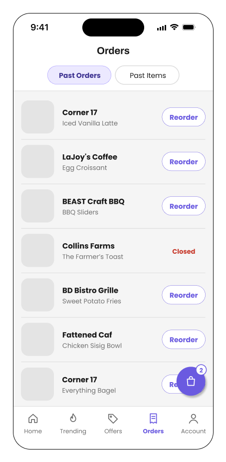
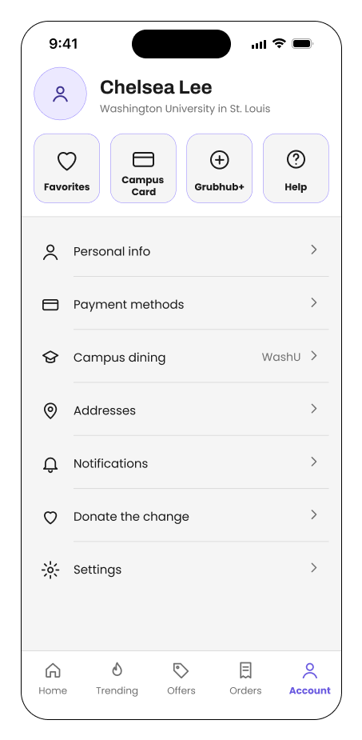
Full Design System
Rebuilt from scratch around the new purple palette: a light and dark role system, a two-typeface hierarchy, and a small set of consistent button states.
Typography
Two typefaces split the hierarchy cleanly: Archivo for headers, where its weight and structure carry the most visual authority, and Poppins for body copy and micro-text, where its rounder, friendlier shapes stay easy to read at small sizes.
Icons
Buttons
Reflection
-
01
An open-ended prompt is still a prompt. "Redesign the UI" sounds like total freedom, but working solo forced me to write my own brief in week one, pain points, a persona, a rough scope, before I let myself touch a single screen. Skipping that step would have meant redesigning based on my own assumptions instead of real friction points.
-
02
Color decisions need a real reason, not just a preference. Swapping orange for purple was tempting to do purely for differentiation, but it only earned its place once I could point to a concrete problem, orange's contrast breaking down at high menu density, that the new palette actually solved.
-
03
A one-week solo timeline rewards ruthless scoping. Without a team to divide research, wireframes, and UI across, I had to decide early which fidelity stages actually needed to exist versus which ones I could compress, so the highest-impact screens got the most iteration instead of spreading effort evenly and finishing nothing all the way.
-
04
Next step: close the research gaps. The survey data and original-app screenshots are still placeholders here, real numbers from a wider student survey would sharpen the case for exactly which pain points to prioritize next.